Prepared by Muhammad Tayyab, Subject Specialist Mathematics, Govt Christian High School Daska
📌 Based on National Curriculum 2023 / PECTAA Syllabus
📖 What's Inside: This exercise covers finding intercepts of linear equations graphically, solving systems of linear equations by graphical method, and solving linear-quadratic systems graphically. Perfect for Punjab Boards exam preparation.
📚 Related Resources – Chapter 2: Quadratic Equations
Class 10 Math Chapter 2 Exercise 2.2 – Graphical Solutions: Complete Guide
Exercise 2.2 of Chapter 2 introduces students to graphical solutions of equations. Students learn to find intercepts of linear equations, solve systems of linear equations graphically, and solve linear-quadratic systems. These visual methods help students understand the geometric meaning of equations and their solutions.
What You Will Learn
By working through Exercise 2.2, students master: finding \( x \)-intercepts (put \( y=0 \)) and \( y \)-intercepts (put \( x=0 \)) of linear equations, solving systems of linear equations by plotting both lines and finding their intersection, and solving linear-quadratic systems by finding intersection points of a line and a parabola.
Topics Covered in This Exercise
- Intercepts of Linear Equations – finding \( x \) and \( y \) intercepts graphically
- Linear Systems Graphically – solving \( 2 \times 2 \) systems by graphing
- Linear-Quadratic Systems – finding intersection points of a line and a parabola
- Algebraic Verification – confirming graphical solutions algebraically
Why Exercise 2.2 Is Important
Exercise 2.2 builds essential graphing skills. Board exam papers frequently feature questions on graphical solutions, especially intercepts and systems. This exercise helps students visualize the relationship between algebraic equations and their geometric representations.
Punjab Board Preparation
Students preparing for board exams under any of the 10 BISE Punjab boards should prioritise this exercise. Graphical methods are frequently tested, and intercept questions appear regularly. Practising every part of Q1, Q2, and Q3 by hand is highly recommended.
Exam Tips for Graphical Solutions
- For \( x \)-intercept: set \( y = 0 \) and solve for \( x \).
- For \( y \)-intercept: set \( x = 0 \) and solve for \( y \).
- When graphing, use at least two points for each line.
- For linear-quadratic systems, the intersection points are the solutions.
Common Mistakes Students Make
- Swapping \( x \) and \( y \) intercept values.
- Not plotting enough points for accurate graphs.
- Forgetting to verify solutions algebraically.
- Misinterpreting intersection points on the graph.
📖 Exercise 2.2 – Solved Problems
For \(x\)-intercept: Put \(y = 0\)
\[ x + 0 = 8 \quad\Rightarrow\quad x = 8 \]Point: \((8,0)\)
For \(y\)-intercept: Put \(x = 0\)
\[ 0 + y = 8 \quad\Rightarrow\quad y = 8 \]Point: \((0,8)\)
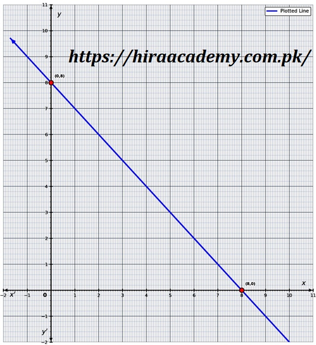
For \(x\)-intercept: Put \(y = 0\)
\[ x - 0 = 1 \quad\Rightarrow\quad x = 1 \]Point: \((1,0)\)
For \(y\)-intercept: Put \(x = 0\)
\[ 0 - y = 1 \quad\Rightarrow\quad -y = 1 \quad\Rightarrow\quad y = -1 \]Point: \((0,-1)\)
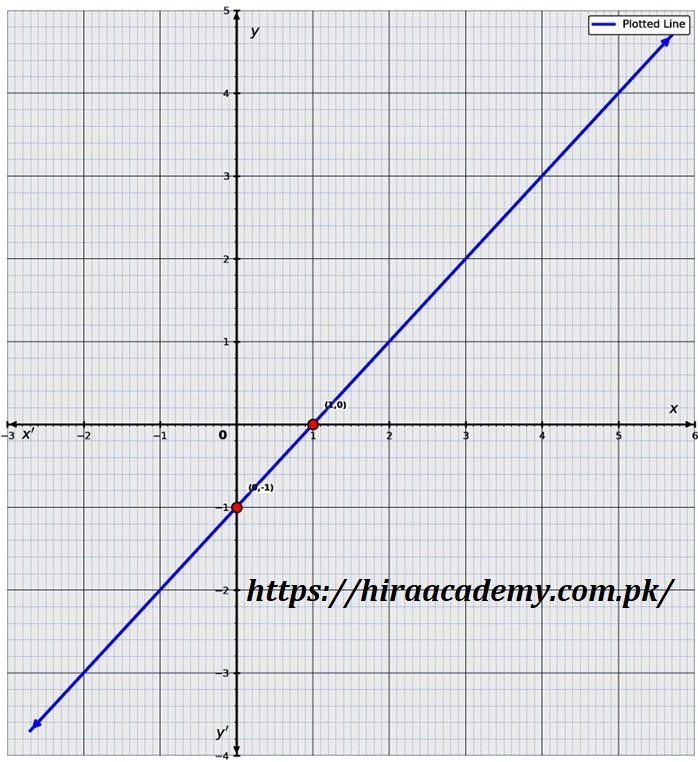
For \(x\)-intercept: \(y = 0\)
\[ x - 2(0) = 1 \quad\Rightarrow\quad x = 1 \]Point: \((1,0)\)
For \(y\)-intercept: \(x = 0\)
\[ 0 - 2y = 1 \quad\Rightarrow\quad -2y = 1 \quad\Rightarrow\quad y = -\frac{1}{2} = -0.5 \]Point: \((0, -0.5)\)
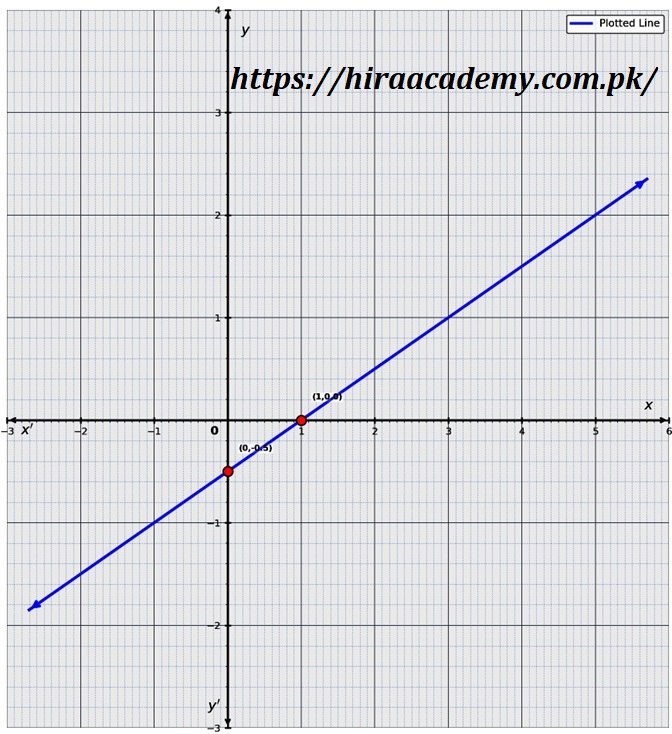
For \(x\)-intercept: \(y = 0\)
\[ x - 2(0) + 2 = 0 \quad\Rightarrow\quad x + 2 = 0 \quad\Rightarrow\quad x = -2 \]Point: \((-2,0)\)
For \(y\)-intercept: \(x = 0\)
\[ 0 - 2y + 2 = 0 \quad\Rightarrow\quad -2y = -2 \quad\Rightarrow\quad y = 1 \]Point: \((0,1)\)
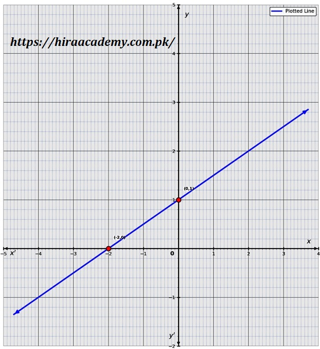
For \(x\)-intercept: \(y = 0\)
\[ 5x - 5(0) = 1 \quad\Rightarrow\quad 5x = 1 \quad\Rightarrow\quad x = \frac{1}{5} = 0.2 \]Point: \((0.2, 0)\)
For \(y\)-intercept: \(x = 0\)
\[ 5(0) - 5y = 1 \quad\Rightarrow\quad -5y = 1 \quad\Rightarrow\quad y = -\frac{1}{5} = -0.2 \]Point: \((0, -0.2)\)
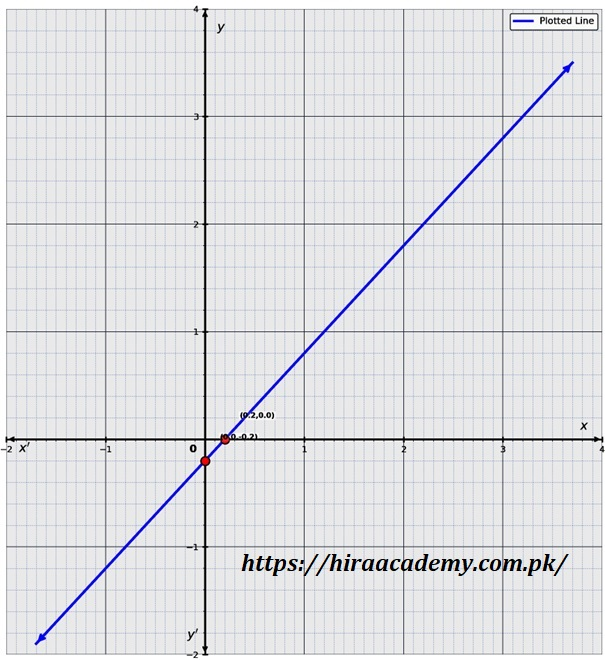
For \(x + y = 8\): \(x\)-intercept: \((8,0)\), \(y\)-intercept: \((0,8)\)
For \(3x - y = 4\): \(x\)-intercept: \(\left(\frac{4}{3},0\right)\), \(y\)-intercept: \((0,-4)\)
Point of intersection (Algebraic verification):
\[ \begin{aligned} x + y &= 8 \quad \text{(i)}\\ 3x - y &= 4 \quad \text{(ii)}\\ \text{From (i): } x &= 8 - y \\ \text{Substitute into (ii): } 3(8-y) - y &= 4 \\ 24 - 3y - y &= 4 \\ 24 - 4y &= 4 \\ 20 &= 4y \\ y &= 5 \\ x &= 8 - 5 = 3 \end{aligned} \]Hence intersection point \(M(3,5)\).
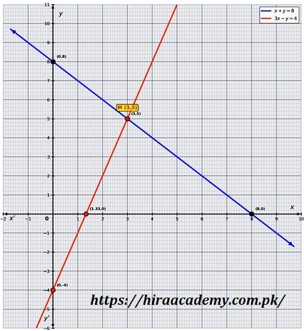
Line 1: \(x - y = 1\): intercepts \((1,0)\) and \((0,-1)\).
Line 2: \(x + 2y = 7\): intercepts \((7,0)\) and \((0,3.5)\).
\[ \begin{aligned} x - y &= 1 \quad \text{(i)}\\ x + 2y &= 7 \quad \text{(ii)}\\ \text{From (i): } x &= 1 + y \\ 1 + y + 2y &= 7 \\ 1 + 3y &= 7 \\ 3y &= 6 \quad\Rightarrow\quad y = 2 \\ x &= 1 + 2 = 3 \end{aligned} \]Intersection: \(M(3,2)\).
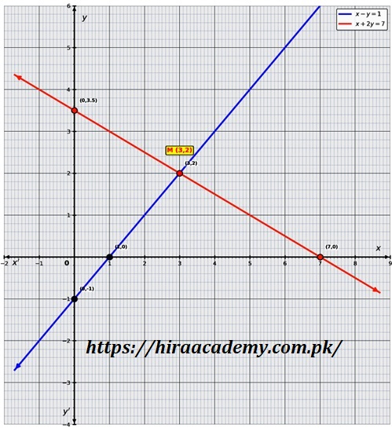
\(x-2y=1\): intercepts \((1,0)\), \((0,-0.5)\). \(2x+y=2\): \((1,0)\), \((0,2)\).
\[ \begin{aligned} x - 2y &= 1 \quad\Rightarrow\quad x = 1+2y \\ 2(1+2y) + y &= 2 \\ 2 + 4y + y &= 2 \\ 5y &= 0 \quad\Rightarrow\quad y = 0 \\ x &= 1 + 0 = 1 \end{aligned} \]Intersection: \(M(1,0)\).
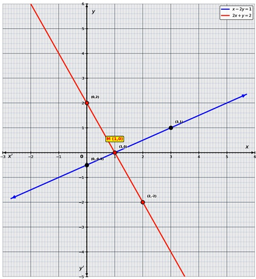
Line \(y=2x+2\): intercepts: \((-1,0)\) and \((0,2)\).
\(3x+2y=4\): intercepts: \((\frac{4}{3},0)\) and \((0,2)\).
\[ \begin{aligned} y &= 2x+2 \\ 3x + 2(2x+2) &= 4 \\ 3x + 4x + 4 &= 4 \\ 7x &= 0 \quad\Rightarrow\quad x = 0 \\ y &= 2(0)+2 = 2 \end{aligned} \]Intersection: \(M(0,2)\).
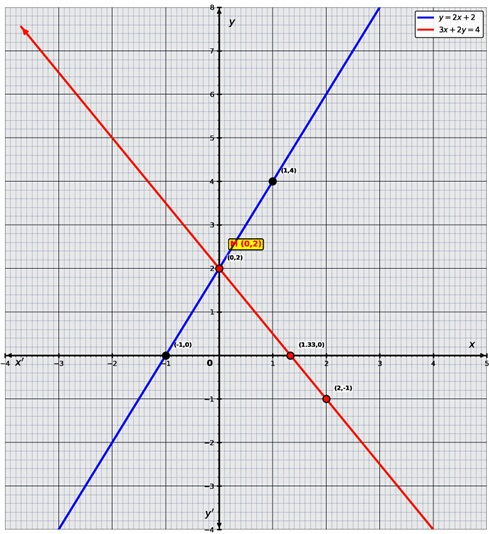
\(3y=2x+8\): intercepts \((-4,0)\), \((0,\frac{8}{3})\).
\(x+y=1\): intercepts \((1,0)\), \((0,1)\).
\[ \begin{aligned} 3y &= 2x+8 \quad\Rightarrow\quad y = \frac{2x+8}{3} \\ x + \frac{2x+8}{3} &= 1 \\ \frac{3x + 2x+8}{3} &= 1 \\ 5x + 8 &= 3 \\ 5x &= -5 \quad\Rightarrow\quad x = -1 \\ y = \frac{2(-1)+8}{3} = \frac{-2+8}{3} = 2 \end{aligned} \]Intersection: \(M(-1,2)\).
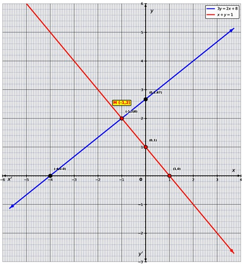
Linear: \(y = 8x - 32\): \(x\)-intercept: \((4,0)\); \(y\)-intercept: \((0,-32)\).
Quadratic: \(y = x^2 - 6x + 8\). Vertex: \(x = 3\).
| \(x\) | -3 | -2 | -1 | 0 | 1 | 2 | 3 | 4 | 5 | 6 | 7 |
|---|---|---|---|---|---|---|---|---|---|---|---|
| \(y = x^2-6x+8\) | 35 | 24 | 15 | 8 | 3 | 0 | -1 | 0 | 3 | 8 | 15 |
Algebraic intersection:
\[ \begin{aligned} x^2 - 6x + 8 &= 8x - 32 \\ x^2 -14x + 40 &= 0 \\ (x-10)(x-4) &= 0 \\ \Rightarrow x = 10 \quad\text{or}\quad x = 4 \end{aligned} \]For \(x=4\): \(y=8(4)-32=0\) → \((4,0)\)
For \(x=10\): \(y=8(10)-32=48\) → \((10,48)\).
Intersection points: \(M_1(4,0)\) and \(M_2(10,48)\).
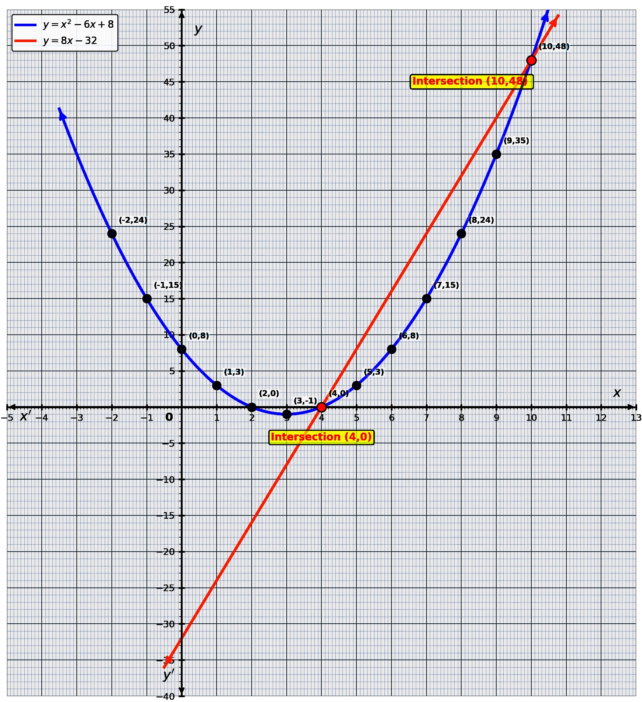
Rewrite linear: \(y = -x + 2\). Intercepts: \((2,0)\) and \((0,2)\).
Quadratic: \(y = 2x^2 + x - 10\). Vertex: \(x = -0.25\).
| \(x\) | -4 | -3 | -2 | -1 | 0 | 1 | 2 | 3 |
|---|---|---|---|---|---|---|---|---|
| \(y=2x^2+x-10\) | 18 | 5 | -4 | -9 | -10 | -7 | 0 | 11 |
Algebraic solution:
\[ \begin{aligned} 2x^2 + x - 10 &= -x + 2 \\ 2x^2 + 2x - 12 &= 0 \\ 2(x^2 + x - 6) &= 0 \\ x^2 + 3x - 2x - 6 &= 0 \\ x(x+3) - 2(x+3) &= 0 \\ (x-2)(x+3) &= 0 \\ \Rightarrow x = 2 \quad\text{or}\quad x = -3 \end{aligned} \]When \(x=2\): \(y = -2 + 2 = 0\) → \((2,0)\)
When \(x=-3\): \(y = -(-3) + 2 = 5\) → \((-3,5)\).
Intersection points: \(M_1(-3,5)\) and \(M_2(2,0)\).
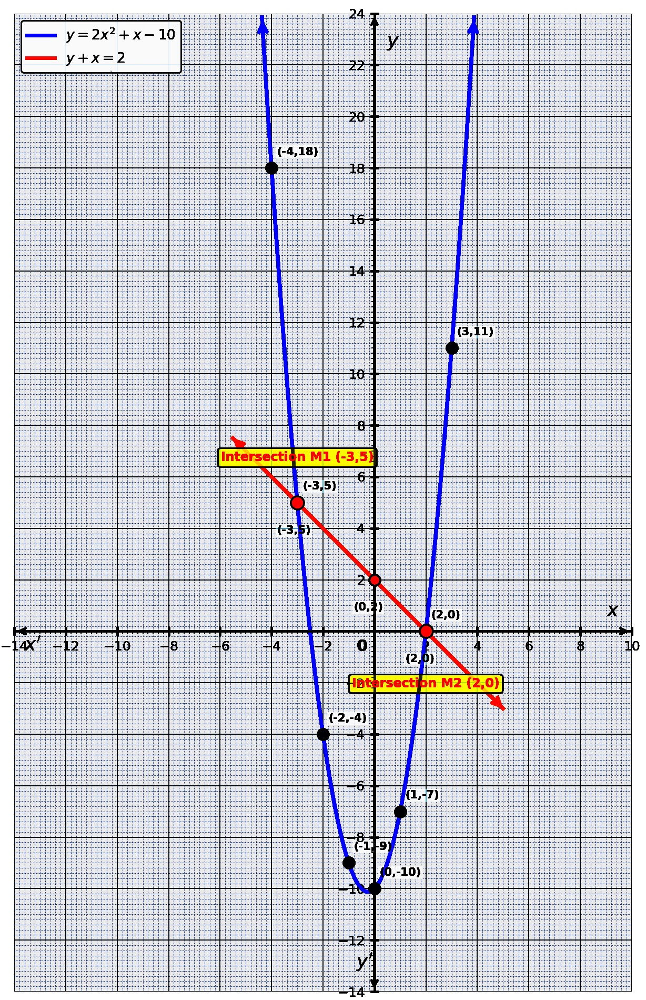
📝 Multiple Choice Questions (Chapter 2 Practice)
1. The \(x\)-intercept of \(x + y = 8\) is:
For \(x\)-intercept, put \(y=0\): \(x+0=8 \Rightarrow x=8\).
2. The \(y\)-intercept of \(x - 2y = 1\) is:
For \(y\)-intercept, put \(x=0\): \(-2y=1 \Rightarrow y=-0.5\).
3. The intersection point of \(x+y=8\) and \(3x-y=4\) is:
Solving \(x+y=8\) and \(3x-y=4\) gives \(x=3, y=5\).
4. A linear-quadratic system can have at most:
A line and a parabola can intersect at a maximum of 2 points.
5. The graph of \(y = 2x^2 + x - 10\) is a:
Since \(a=2>0\), the parabola opens upward.
📈 Key Graphical Concepts
- x-intercept: Put \(y=0\) → point where graph meets x-axis.
- y-intercept: Put \(x=0\) → point where graph meets y-axis.
- Solving linear systems graphically: Intersection of two lines gives the solution.
- Linear-Quadratic system: Intersection points satisfy both equations; may have 0, 1, or 2 solutions.
- Vertex of Parabola: \(x_v = -\frac{b}{2a}\) for \(y=ax^2+bx+c\)
❓ Frequently Asked Questions
What is taught in Exercise 2.2 of Class 10 Math Chapter 2?
Exercise 2.2 covers graphical solutions: finding intercepts of linear equations, solving systems of linear equations graphically, and solving linear-quadratic systems graphically.
How many questions are there in Chapter 2 Exercise 2.2?
Exercise 2.2 has 3 main questions: Question 1 (5 parts) covers finding intercepts graphically, Question 2 (5 parts) covers solving linear systems graphically, and Question 3 (2 parts) covers solving linear-quadratic systems graphically.
What is an x-intercept in graphical solutions?
The \( x \)-intercept is the point where the graph crosses the \( x \)-axis. To find it, set \( y = 0 \) and solve for \( x \).
What is a y-intercept in graphical solutions?
The \( y \)-intercept is the point where the graph crosses the \( y \)-axis. To find it, set \( x = 0 \) and solve for \( y \).
How do you solve systems of equations graphically?
To solve systems graphically, plot both equations on the same coordinate plane. The point(s) where the graphs intersect represent the solution(s) to the system.
Is this solution according to the PECTAA syllabus?
Yes, these solutions are prepared according to the PECTAA / National Curriculum 2023 syllabus for Class 10 Mathematics.
Is this Exercise 2.2 solution valid for all Punjab Boards?
Yes, the content follows the unified Punjab textbook and is applicable to students of all 10 BISE Punjab boards.
Are solved PDF notes available for Exercise 2.2?
Yes, a complete solved PDF for Exercise 2.2 is embedded on this page and available to download for free.
Can I download the Chapter 2 Exercise 2.2 solution as a PDF?
Yes, use the Download PDF button on this page to save the complete solved Exercise 2.2 notes to your device.
Is Exercise 2.2 important for Class 10 board exams?
Yes, graphical solutions are frequently tested in board exams. Exercise 2.2 builds essential skills in visualizing equations and finding solutions graphically.
Who prepared these Class 10 Math Chapter 2 notes?
These notes were prepared by Muhammad Tayyab, Subject Specialist Mathematics at Govt Christian High School Daska, for Hira Science Academy.